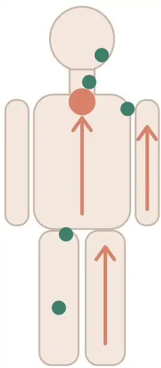

맘스애 · 아라쌤
우리 아기 지금
출산일만 알려주시면, 오늘 엄마와 아기에게 필요한 것만 골라서 보여드릴게요.
입력하신 내용은 이 휴대폰에만 저장되고, 어디로도 보내지 않아요.
요즘 우리 아기
엄마가 해줄 것
곧 만날 모습 ·
맘스애 · 아라쌤 · 수유·수면 기준: 아이사랑
엄마
요즘 내 몸
오늘 해볼 것
아프면 바로 멈추세요. 몸이 먼저예요.
이럴 땐 병원으로눌러서 확인하기
"엄마도 돌봄이 필요한 사람이에요."
모아보기
아침 · 1분쇄골 ①②만
저녁 · 2분쇄골 ①② → 겨드랑이 → 사타구니 → 무릎 뒤

이것만 기억하세요· 세게 누르지 말고, 피부만 살짝 늘리듯
· 방향은 항상 쇄골 쪽으로
· 처음엔 1세트, 익숙해지면 늘려요
· 아픈 곳만 하지 말고 쇄골부터 순서대로
· 방향은 항상 쇄골 쪽으로
· 처음엔 1세트, 익숙해지면 늘려요
· 아픈 곳만 하지 말고 쇄골부터 순서대로
이럴 땐 마사지 말고 병원에 먼저 연락하세요한쪽 다리나 팔만 갑자기 많이 붓고 아플 때, 붉고 뜨겁거나 열감이 있을 때, 숨이 차거나 가슴이 아플 때. 제왕절개 상처 주변은 피해 주세요.
운동 시작 시기는 담당 의사와 먼저 상의하세요. 제왕절개는 상처가 회복된 뒤에 하고, 통증이 있으면 바로 멈추세요.
맘스애 산후출장관리 · 아라쌤
이 내용은 일반적인 정보이며 진단이나 치료를 대신하지 않아요. 아기마다, 엄마마다 속도가 달라요. 이상한 점이 있으면 소아청소년과나 산부인과에 문의해 주세요.